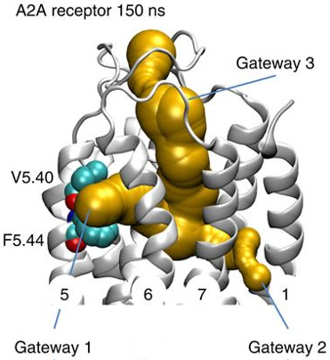
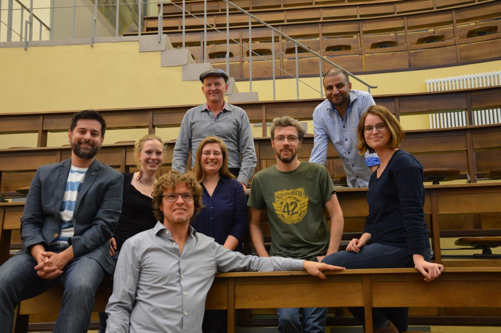

Loading...
Introduction to Molecular Dynamics simulations
2019-05-03
Johanna Tiemann
AG Hildebrand − University Leipzig
Why performing simulations?
Computational biology can offer
explanations & predictions
⇒ Replace, accompany, explain & trigger experiments
Combination of Experiment & Computation
Spatiotemporal resolutions of biophysical techniques
Exploring energy landscapes
Goal: find global minimum of Gibbs free energy
ΔG = ΔH-TΔS
ΔH = Enthalpy; T = Absolute temperature; ΔS = Entropy
Exploring energy landscapes
⇒ not that simple!
Minimization vs. Molecular Dynamics
Exploring energy landscapes
What to investigate?
Computational microscopy & its resolutions
Basics of classical MDs
Fundamental equation of classical molecular dynamics: Newton's laws of motion
The forces is given by the negative gradient of the potential energy.
Fi = - ∂Utotal / ∂ri
Knowing the force allows us to accelerate the atoms in the direction of the force
Fi = m ai
Potential energy calculated from bonded & non-bonded interactions
Utotal = Ubonded + Unon-bonded
Basics of classical MDs
Force Fields
⇒ Energy of atoms by Utotal & parameters
costs ⇓ complexity
Simplified description:
- Fixed point charges ⇒ no electronic polarization
- Classical mechanics ⇒ no isotope effects
- Fixed bond topology ⇒ no chemistry
⇓
Specific force fields for specific questions!
Basics of classical MDs
Fi = m ai = - ∂Utotal / ∂ri
- Assign masses & initial velocities
- Simulation loop
- update neighbour list
- calculate forces F(r)
- solve equation of motion
- update position and velocity
- include constraints
- perform p, T control
- data output
- Resulting trajectory analysis
⇒ Calcuating forces is expensive
Typical classical MD setup
- Structure preparation
- Membrane insertion
- Solvation, ionization
- Apply PBC
- Minimize
- Equilibrate
- Production run
1. Structure preparation
- Structure determination:
- X-ray, Cryo-EM, NMR
- Homology model: MODELLER, SwissModel, Rosetta, SSFE
1. Structure preparation
- Homology model/X-ray/Cryo-EM/NMR structure
- Back to native: mutations
- Missing residues/side-chains: SL2/FragFit (< 20/30 AA)
- Capping
- Fill cavities/packing defects: Dowser/MPPD
- Protonation states, modifications
1. Structure preparation
- Homology model/X-ray/Cry-EM/NMR structure
- Back to native: mutations
- Missing residues/side-chains: SL2/FragFit (< 20/30 AA)
Ismer, Rose, Tiemann, ... Hildebrand 2016 - Nucleic Acids Research (doi: 10.1093/nar/gkw297)
Tiemann, ... Hildebrand 2018 - Nucleic Acids Research (doi: 10.1093/nar/gky424)
1. Structure preparation
- Homology model/X-ray/Cry-EM/NMR structure
- Back to native: mutations
- Missing residues/side-chains: SL2/FragFit (< 20/30 AA)
- Capping
- Fill cavities/packing defects: Dowser/MPPD
- Protonation states, modifications
1. Structure preparation
- Homology model/X-ray/Cry-EM/NMR structure
- Back to native: mutations
- Missing residues/side-chains: SL2/FragFit (< 20/30 AA)
- Capping
- Fill cavities/packing defects: Dowser/MPPD
- Protonation states
1. Structure preparation
- Homology model/X-ray/Cry-EM/NMR structure
- Back to native: mutations
- Missing residues/side-chains: SL2/FragFit (< 20/30 AA)
- Capping
- Fill cavities/packing defects: Dowser/MPPD
- Protonation states, modifications
Typical classical MD setup
- Structure preparation
- Membrane insertion
- Membrane composition: POPC, Cholesterol, ...
- Algorithm: CG, Shrinking, replacement
- Solvation, ionization
- Box-size & PBC
- Minimize
- Equilibrate
- Production run
Typical classical MD setup
- Structure preparation
- Membrane insertion
- Solvation, ionization
- Explicit vs. Implicit / Continuum solvation models)
- Neutralize system & structure
- ⇒ net charge information of system needed!
- Box-size & PBC
- Minimize
- Equilibrate
- Production run
Typical classical MD setup
- Structure preparation
- Membrane insertion
- Solvation, ionization
- Box-size & PBC
Typical classical MD setup
- Structure preparation
- Membrane insertion
- Solvation, ionization
- Box-size & PBC
- Minimize
- Equilibrate
- Production run
Typical classical MD setup
- Structure preparation
- Membrane insertion
- Solvation, ionization
- Box-size & PBC
- Minimize
- Equilibrate
- Production run
Mechanical ensembles
Statistical mechanical ensembles allow to exchange energy with an external environment
- Particle number (N) vs Chemical potential (μ)
- Volume (V) vs Pressure (P)
- Energy (E) vs Temperature (T)
Integrators/Algorithms
⇒ How to make a step!
- Gradient Ascent (e.g. Steepest Descent):
→ zig-zag - Langevin dynamics (stochastic dynamics):
→ friction force & random force - Metropolis Monte Carlo method (Metropolis-Hastings):
→ following a probability by Metropolis criterion - ...

Typical classical MD setup
- Structure preparation
- Membrane insertion
- Solvation, ionization
- Box-size & PBC
- Minimize
- Equilibrate
- Production run
Analysis & Application
So much to explore...
- check energy, total pressure, pressure tensor, density, box
- area per lipid headgroup: verify stable meambran
- radius of gyration: measure of compactness
- density: stable → well-equilibrated system
- rotation & tilt movements
- receptor/water/ions/ligand/lipid movements & interactions
- information about contacts, distances, hydrogen bond and cation π-interaction energies
- ...
...so many different tools...
Analysis & Application
Protein Folding: Structure prediction
- RMSD
- DSSP
- Interactions (Distance, Hbond, ...)
Analysis & Application
Protein Folding: Structure prediction
- RMSD
- DSSP
Analysis & Application
Conformational changes
- RMSF
Analysis & Application
Protein-Ligand binding
- free energies
- RMSD
- Distances
Analysis & Application
So much to explore...
- check energy, total pressure, pressure tensor, density, box
- area per lipid headgroup: verify stable meambran
- radius of gyration: measure of compactness
- density: stable → well-equilibrated system
- rotation & tilt movements
- receptor/water/ions/ligand/lipid movements & interactions
- information about contacts, distances, hydrogen bond and cation π-interaction energies
- ...
- VISUALIZATION
Standard of visual sharing
|
Text ⇓ |
Figures ⇓ 
|
Videos ⇓ |
|---|
Obstacles to overcome for visual sharing:
- large size⇒ NGL viewer
- various formats⇒ MDAnalysis & MDTraj
- raw trajectories⇒ NGL viewer
- expert software⇒ NGL viewer
- sharable?
⇒ MDsrv
Web developments → NGL viewer
NGL Viewer: Rose & Hildebrand (2015). Nucleic Acids Res., 43(W1), W576-9.
Web development → NGL viewer
NGL Viewer: Rose & Hildebrand (2015). Nucleic Acids Res., 43(W1), W576-9.
Obstacles to overcome for visual sharing:
- large size ⇒ NGL viewer
- various formats ⇒ MDAnalysis & MDTraj
- raw trajectories ⇒ NGL viewer
- expert software ⇒ NGL viewer
- sharable?
⇒ MDsrv
NGL Viewer: Rose & Hildebrand (2015). Nucleic Acids Res., 43(W1), W576-9.
MDAnalysis: Michaud-Agrawal, et al. (2011). J Comput Chem., 32 (10), 2319-27.
MDTraj: McGibbon, et al. (2015). Biophys J., 109 (8), 1528-32.
MDsrv: Tiemann, et al. (2017). Nat Methods., 14 (12), 1123-1124.
MDsrv
tool to stream trajectories over the web
What did you learn...
- Different methods for different questions
- Basics of classical MD
- Analysis depends on the question
What's next?
- Simulation of SH3 domains & Arrestin peptides
- Simulation setup of SH3 domain & full-length Arrestin
“All knowledge is connected to all other
knowledge. The fun is in making
the connections.”
Arthur C. Aufderheide (1922 - 2013, paleopathologist)
Thank you!
Peter Hildebrand (University Leipzig & Charité Berlin)
Alex Rose (UC San Diego)
Ramon Guixà-Gonzáles (Charité Berlin & Universitat Autònoma de Barcelona)
